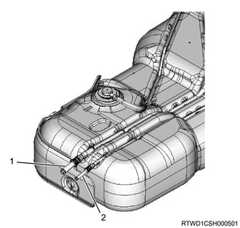
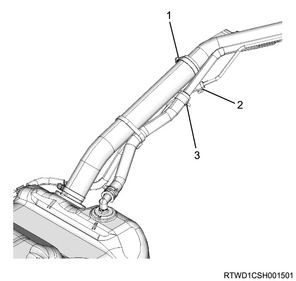
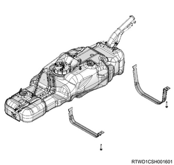
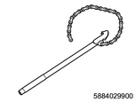
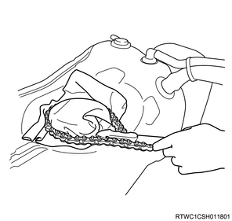

1. Open the engine hood assembly.
2. Disconnect the battery ground cable from the battery.
Caution
3. Raise vehicle using the jack.
1. Remove the fuel filler cap from the filler neck.
Note
Caution
1. Disconnect the fuel feed tube from the fuel hose.
2. Disconnect the fuel return tube from the fuel hose.

1. Disconnect the breather hose from the filler neck.
2. Disconnect the fuel filler hose from the filler neck.
3. Disconnect the evaporator hose from the filler neck.
Note

4. Hold the fuel tank using the lifter.
Note
5. Remove the fuel tank band from the frame.

6. Disconnect the connector from the fuel tank unit.
7. Remove the fuel tank from vehicle.
Note
Caution
1. Remove the fuel tube from the fuel tank unit.
2. Remove the fuel return tube from the fuel tank unit.
3. Remove the retainer ring from the fuel tank.
Note

SST: 5-8840-2990-0 - wrench; fuel pump retainer

Caution
4. Remove the fuel tank unit from the fuel tank.
Note
Caution